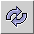
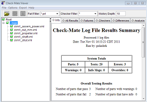
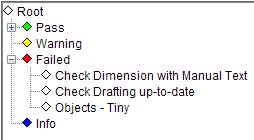
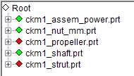
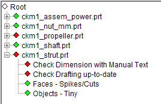
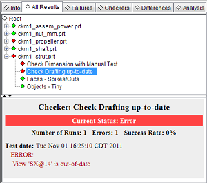

在 Check-Mate 查看器对话框的文件夹树中，展开 logs 节点。
选中 logs 节点的复选框 。
点击刷新数据显示 。

在 Info 选项卡中查看所给的信息。
点击 Checkers 选项卡并展开 Failed 节点。
三个检查器对装配的整体检查结果均为 Failed，因此它们都被包含在 Failed 节点中。

点击 All Results 选项卡。
ckm1_propeller.prt 以及 ckm1_strut.prt 节点旁的红色方块表示这些部件的整体状态为 Failed。

展开节点 ckm1_strut。

选择检查器 Check Drafting up-to-date。
选定检查器的结果汇总将显示在下方的窗口中。
右击 Check Drafting up-to-date 检查器并选择 Details。
将在下方的窗口中显示其它测试结果信息以及参数设置。

点击其它选项卡并查看其中的数据。
Differences 选项卡中只有一个根节点，这是因为没有前一个测试的结果可用于对比。